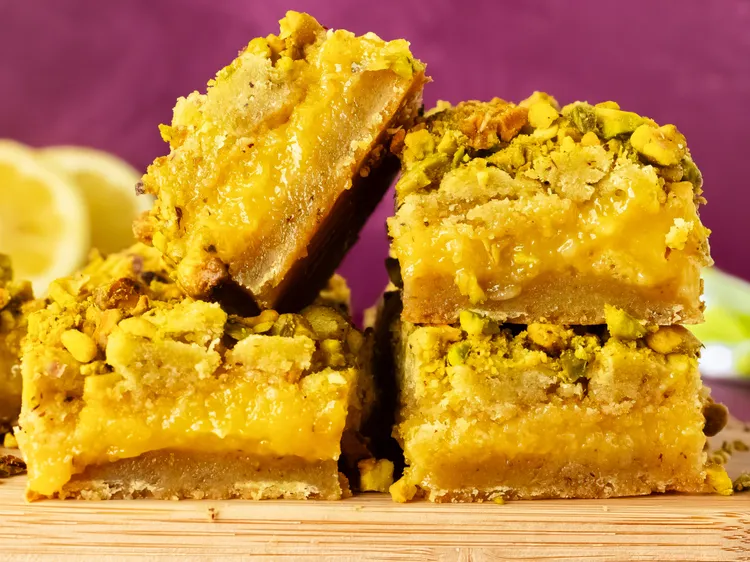

Pistachio Lemon Bars

Home
Upgrade your usual lemon bars with a nutty pistachio crust and topping paired with a gooey, tart filling. Sweet, rich, and refreshing, these pistachio lemon bars are a delicious twist on the beloved classic.
Ingrediens:
Crust and Topping
- 3/4 cup unsalted butter, softened
- 1/2 cup white sugar
- 1/4 teaspoon salt
- 1/8 teaspoon ground nutmeg
- 3/4 cup finely ground unsalted pistachios
- 1 1/2 teaspoons vanilla extract
- 1/2 teaspoon almond extract
- 1 1/4 cups all-purpose flour
- 1/2 cup chopped unsalted pistachios
Filling
- 1 cup white sugar
- 2 large eggs, at room temperature
- 1/3 cup fresh lemon juice
- 2 tablespoons freshly grated lemon zest
- 2 tablespoons all-purpose flour
- 1/4 teaspoon salt
- 1/4 teaspoon baking powder
Steps:
- Preheat the oven to 350 degrees F (180 degrees C). Line an 8x8-inch square pan with enough parchment paper to have overhang on all sides.
- For crust and topping, beat butter, white sugar, salt and nutmeg together in a large bowl until light and fluffy. Add ground pistachios, vanilla, and almond extract and mix until thoroughly combined. Add flour and mix until just incorporated. Dough will be somewhat soft and sticky at this point. Measure out 3/4 cup dough to use for topping, and refrigerate topping until needed; set chopped pistachios aside.
- Place remaining dough into the prepared pan. Using floured hands, press dough firmly and evenly into the bottom of the pan for crust.
- Bake crust in the preheated oven until edges are beginning to turn golden and crust has puffed, 15 to 20 minutes. Remove from oven, but leave oven on.
- Meanwhile, for filling, whisk sugar, eggs, lemon juice, lemon zest, flour, salt and baking powder together in a bowl until smooth and combined. Pour filling over baked crust.
- Return pan to the oven and bake for 15 minutes. Carefully remove pan from the oven.
- Remove topping mixture from the refrigerator. Break topping into chunks, about 1/2-inch or smaller, and sprinkle evenly over the filling. Sprinkle chopped pistachios over topping.
- Return pan to the oven and bake until top of bars begin to turn golden, and the filling has only a slight jiggle to it, 15 to 20 minutes more. Remove from the oven.
- Allow bars to cool completely, about 1 hour. If desired, place bars into the refrigerator for at least an hour to chill, to make cleaner cuts. Store extra bars in the refrigerator.